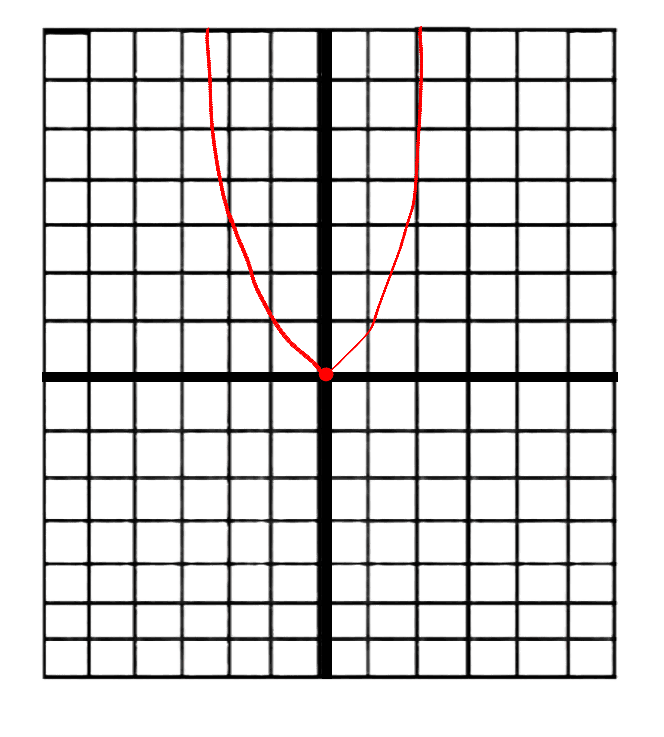
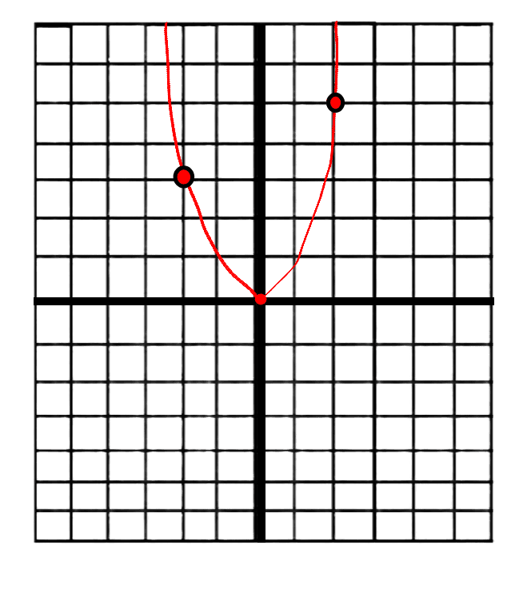

Derivatives are the unique and instantaneous change in a sloped line like a quadratic…

When we put two dots on the line, both dots would be on a spot with a different slope...

These points have different slopes because as the base of an exponent increases…
For derivatives we take the slope function…
x changes to ∆x…
y changes to f(x + h) - f(x)...
Let's say that the function is f(x) = 2x². We would substitute the f with 2x²…
And as ∆x converges towards zero, we can just say that the derivative of 2x² is 4x.
Derivatives can be shown in many different ways. For example the most common one is d/dx…
This is telling us the rate of change of y over the rate of change of x. This is the Leibniz notation for derivatives.
Another way is adding an apostrophe next to the f in a function…
Derivatives can also be written with a capitalized letter as the function…
A function with an apostrophe is called prime notation.
Derivatives can also be written with a limit as well…
In this type of derivative notation, c is the rate of change of x.
Derivatives can be shown with a capital D for derivatives surrounding f(x)...
This is called Euler’s notation.